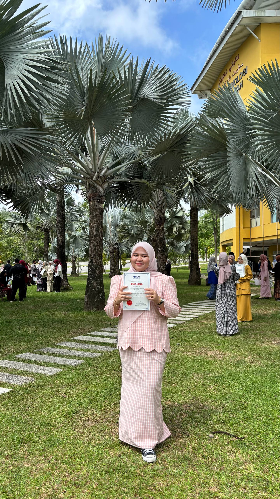

Hi! I'm Wardina Najihah Binti Rusmadi, a Computer Science (Interactive Media) student at Universiti Teknikal Malaysia Melaka (UTeM).
I love exploring how digital media can connect people and tell stories in new, meaningful ways. My interests include interactive design, visual communication, user experience, multimedia creation, and anything that blends logic with imagination.
I enjoy learning new tools and experimenting with creative ideas, whether it's designing interfaces, editing visuals, or building interactive projects. Every project I create is a chance to express ideas, solve problems, and push my creativity further.
Outside of my studies, I like discovering visual styles, exploring digital trends, and capturing everyday moments that inspire new concepts.
Bachelor of Computer Science (Interactive Media)
Science Physical